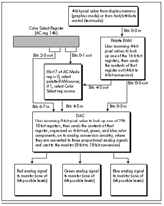

| Previous | Table of Contents | Next |
Kevin Mangis wants to know about the VGA’s 4-bit to 8-bit to 18-bit color translation. Mansur Loloyan would like to find out how to generate a look-up table containing 256 colors and how to change the default color palette. And surely they are only the tip of the iceberg; hordes of screaming programmers from every corner of the planet are no doubt tearing the place up looking for a discussion of VGA color, and venting their frustration at my mailbox. Let’s have it, they’ve said, clearly and in considerable numbers. As Eurythmics might say, who is this humble writer to disagree?
On the other hand, I hope you all know what you’re getting into. To paraphrase Yogi, the VGA is smarter (and more confusing) than the average board. There’s the basic 8-bit to 18-bit translation, there’s the EGA-compatible 4-bit to 6-bit translation, there’s the 2- or 4-bit color paging register that’s used to pad 6- or 4-bit pixel values out to 8 bits, and then there’s 256-color mode. Fear not, it will all make sense in the end, but it may take us a couple of additional chapters to get there—so let’s get started.
Before we begin, though, I must refer you to Michael Covington’s excellent article, “Color Vision and the VGA,” in the June/July 1990 issue of PC TECHNIQUES. Michael, one of the most brilliant people it has ever been my pleasure to meet, is an expert in many areas I know nothing about, including linguistics and artificial intelligence. Add to that list the topic of color perception, for his article superbly describes the mechanisms by which we perceive color and ties that information to the VGA’s capabilities. After reading Michael’s article, you’ll understand what colors the VGA is capable of generating, and why.
Our topic in this chapter complements Michael’s article nicely. Where he focused on color perception, we’ll focus on color generation; that is, the ways in which the VGA can be programmed to generate those colors that lie within its capabilities. To find out why a VGA can’t generate as pure a red as an LED, read Michael’s article. If you want to find out how to flip between 16 different sets of 16 colors, though, don’t touch that dial!
I would be remiss if I didn’t point you in the direction of two more articles, these in the July 1990 issue of Dr. Dobb’s Journal. “Super VGA Programming,” by Chris Howard, provides a good deal of useful information about SuperVGA chipsets, modes, and programming. “Circles and the Digital Differential Analyzer,” by Tim Paterson, is a good article about fast circle drawing, a topic we’ll tackle soon. All in all, the dog days of 1990 were good times for graphics.
Briefly put, the VGA color translation circuitry takes in one 4- or 8-bit pixel value at a time and translates it into three 6-bit values, one each of red, green, and blue, that are converted to corresponding analog levels and sent to the monitor. Seems simple enough, doesn’t it? Unfortunately, nothing is ever that simple on the VGA, and color translation is no exception.
The color path in the VGA involves two stages, as shown in Figure 33.1. The first stage fetches a 4-bit pixel from display memory and feeds it into the EGA-compatible palette RAM (so called because it is functionally equivalent to the palette RAM color translation circuitry of the EGA), which translates it into a 6-bit value and sends it on to the DAC. The translation involves nothing more complex than the 4-bit value of a pixel being used as the address of one of the 16 palette RAM registers; a pixel value of 0 selects the contents of palette RAM register 0, a pixel value of 1 selects register 1, and so on. Each palette RAM register stores 6 bits, so each time a palette RAM register is selected by an incoming 4-bit pixel value, 6 bits of information are sent out by the palette RAM. (The operation of the palette RAM was described back in Chapter 29.)
The process is much the same in text mode, except that in text mode each 4-bit pixel value is generated based on the character’s font pattern and attribute. In 256-color mode, which we’ll get to eventually, the palette RAM is not a factor from the programmer’s perspective and should be left alone.
Once the EGA-compatible palette RAM has fulfilled its karma and performed 4-bit to 6-bit translation on a pixel, the resulting value is sent to the DAC (Digital/Analog Converter). The DAC performs an 8-bit to 18-bit conversion in much the same manner as the palette RAM, converts the 18-bit result to analog red, green, and blue signals (6 bits for each signal), and sends the three analog signals to the monitor. The DAC is a separate chip, external to the VGA chip, but it’s an integral part of the VGA standard and is present on every VGA.

Figure 33.1 The VGA color generation path.
(I’d like to take a moment to point out that you can’t speak of “color” at any point in the color translation process until the output stage of the DAC. The 4-bit pixel values in memory, 6-bit values in the palette RAM, and 8-bit values sent to the DAC are all attributes, not colors, because they’re subject to translation by a later stage. For example, a pixel with a 4-bit value of 0 isn’t black, it’s attribute 0. It will be translated to 3FH if palette RAM register 0 is set to 3FH, but that’s not the color white, just another attribute. The value 3FH coming into the DAC isn’t white either, and if the value stored in DAC register 63 is red=7, green=0, and blue=0, the actual color displayed for that pixel that was 0 in display memory will be dim red. It isn’t color until the DAC says it’s color.)
The DAC contains 256 18-bit storage registers, used to translate one of 256 possible 8-bit values into one of 256K (262,144, to be precise) 18-bit values. The 18-bit values are actually composed of three 6-bit values, one each for red, green, and blue; for each color component, the higher the number, the brighter the color, with 0 turning that color off in the pixel and 63 (3FH) making that color maximum brightness. Got all that?
| Previous | Table of Contents | Next |